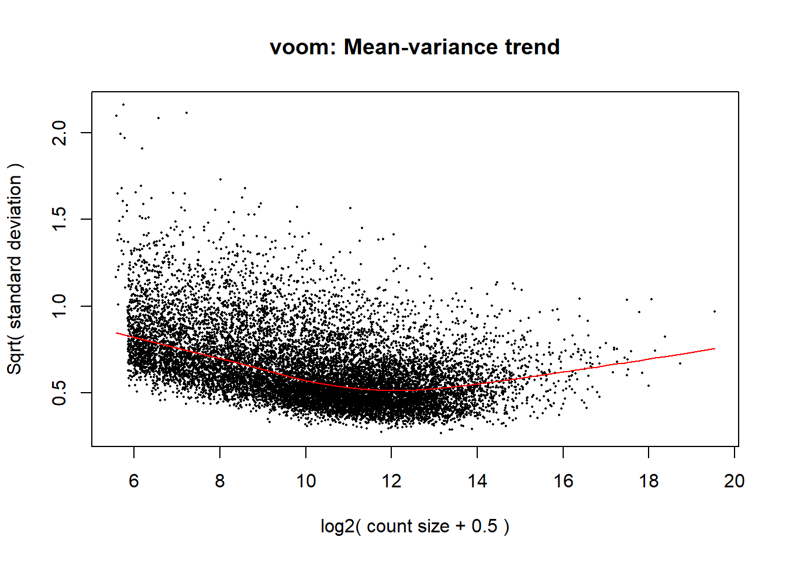

IFNy_DEG_Analysis
Harsha Tamtam
2026-06-05
Last updated: 2026-06-09
Checks: 7 0
Knit directory: IFNy/
This reproducible R Markdown analysis was created with workflowr (version 1.7.2). The Checks tab describes the reproducibility checks that were applied when the results were created. The Past versions tab lists the development history.
Great! Since the R Markdown file has been committed to the Git repository, you know the exact version of the code that produced these results.
Great job! The global environment was empty. Objects defined in the global environment can affect the analysis in your R Markdown file in unknown ways. For reproduciblity it’s best to always run the code in an empty environment.
The command set.seed(20260506) was run prior to running
the code in the R Markdown file. Setting a seed ensures that any results
that rely on randomness, e.g. subsampling or permutations, are
reproducible.
Great job! Recording the operating system, R version, and package versions is critical for reproducibility.
Nice! There were no cached chunks for this analysis, so you can be confident that you successfully produced the results during this run.
Great job! Using relative paths to the files within your workflowr project makes it easier to run your code on other machines.
Great! You are using Git for version control. Tracking code development and connecting the code version to the results is critical for reproducibility.
The results in this page were generated with repository version afeaf0a. See the Past versions tab to see a history of the changes made to the R Markdown and HTML files.
Note that you need to be careful to ensure that all relevant files for
the analysis have been committed to Git prior to generating the results
(you can use wflow_publish or
wflow_git_commit). workflowr only checks the R Markdown
file, but you know if there are other scripts or data files that it
depends on. Below is the status of the Git repository when the results
were generated:
Ignored files:
Ignored: .Rhistory
Ignored: .Rproj.user/
Untracked files:
Untracked: Average_Mapped_Reads.png
Untracked: Individual_Mapped_Reads.png
Untracked: Indiviual_Mapped_Reads.png
Untracked: analysis/IFNy_RNASeq_QualityCheck.Rmd
Untracked: better_log2cpm_boxplot.png
Untracked: log2_cpm_histogram.png
Untracked: log2_cpm_tibble.png
Unstaged changes:
Deleted: analysis/IFNy_Metadata.Rmd
Modified: analysis/Practice_code.Rmd
Note that any generated files, e.g. HTML, png, CSS, etc., are not included in this status report because it is ok for generated content to have uncommitted changes.
These are the previous versions of the repository in which changes were
made to the R Markdown (analysis/IFNy_DEG_Analysis.Rmd) and
HTML (docs/IFNy_DEG_Analysis.html) files. If you’ve
configured a remote Git repository (see ?wflow_git_remote),
click on the hyperlinks in the table below to view the files as they
were in that past version.
| File | Version | Author | Date | Message |
|---|---|---|---|---|
| Rmd | afeaf0a | Harsha Tamtam | 2026-06-09 | wflow_publish("analysis/IFNy_DEG_Analysis.Rmd") |
| html | c93e827 | Harsha Tamtam | 2026-06-05 | Build site. |
| Rmd | b667b63 | Harsha Tamtam | 2026-06-05 | wflow_publish("analysis/IFNy_DEG_Analysis.Rmd") |
Library Section
library(tidyverse)
library(dplyr)
library(tibble)
library(scales)
library(edgeR)
library(smplot2)
library(ggpubr)
library(workflowr)
library(ComplexHeatmap)
library(RColorBrewer)
library(gridExtra)
library(ggrepel)Reading in files:
metadata <- readRDS("data/metadata_IFNy.RDS")
counts <- readRDS("data/counts_IFNy.RDS")
raw_counts <- counts %>%
dplyr::select(-c(Entrez_ID, Symbol)) %>%
as.data.frame() %>%
pivot_longer(-Ensemble, names_to = "Samples", values_to = "raw_counts") %>%
mutate(raw_counts = as.numeric(raw_counts)) %>%
left_join(metadata, by = c("Samples" = "SampleName")) %>%
select(Ensemble, raw_counts, Condition) %>%
pivot_wider(names_from = Condition, values_from = raw_counts) %>%
column_to_rownames("Ensemble")Converting to Log2 CPM (in case this is needed):
raw_log2cpm <- cpm(raw_counts, log = TRUE)
filtered_raw_counts <- raw_counts[rowMeans(raw_log2cpm)> 0,]
dim(filtered_raw_counts)[1] 13456 24str(filtered_raw_counts)'data.frame': 13456 obs. of 24 variables:
$ C_IFNy_C1 : num 1136 1263 1909 785 98 ...
$ C_VEH_C1 : num 1963 851 1608 976 105 ...
$ H_IFNy_H2 : num 1732 3214 3058 1063 105 ...
$ H_VEH_H2 : num 2035 2395 2456 1184 125 ...
$ C_IFNy_C2 : num 840 1221 1641 1134 126 ...
$ C_VEH_C2 : num 1168 748 1349 1457 121 ...
$ H_IFNy_H6 : num 610 7787 3352 798 105 ...
$ H_VEH_H6 : num 914 4206 2128 863 136 ...
$ C_IFNy_C3 : num 1941 1061 2933 962 175 ...
$ C_VEH_C3 : num 3620 601 2208 985 171 ...
$ H_IFNy_H1 : num 199 9352 3080 830 46 ...
$ H_VEH_H1 : num 301 4140 2183 1473 38 ...
$ C_IFNy_C5 : num 1791 2209 2949 586 74 ...
$ C_VEH_C5 : num 3755 1418 3333 896 122 ...
$ H_IFNy_H3 : num 86 2084 2811 845 90 ...
$ H_VEH_H3 : num 54 1334 1930 1015 126 ...
$ C_IFNy_C4 : num 3282 582 3979 943 168 ...
$ C_VEH_C4 : num 5099 326 2472 824 136 ...
$ H_IFNy_H4 : num 113 2641 2699 1034 188 ...
$ H_VEH_H4 : num 152 2258 2388 1590 203 ...
$ C_IFNy_C2R: num 697 2531 1857 1030 125 ...
$ C_VEH_C2R : num 978 1441 1195 1392 106 ...
$ H_IFNy_H5 : num 339 2051 3007 844 127 ...
$ H_VEH_H5 : num 280 1676 2582 1170 130 ...Selecting only for Chimps:
# chimp_meta <- metadata %>%
# filter(
# Species == "C"
# )
#
#
# chimp_counts <- raw_counts %>%
# dplyr::select(Ensemble,
# all_of(chimp_meta$Condition)
# )dge <- DGEList(
counts = filtered_raw_counts,
group = metadata$Cond
)
dge <- calcNormFactors(dge,
method = "TMM"
)
metadata$Cond2 <- metadata$Cond
metadata$Cond2 <- gsub("_R$", "", metadata$Cond2)
design <- model.matrix(~0 + Cond2, data = metadata)
colnames(design) <- gsub("^Cond2", "", colnames(design))
cor_fit <- duplicateCorrelation(object = dge$counts,
design = design,
block = metadata$Individual
)
voom_trend <- voom(dge,
design,
block = metadata$Individual,
correlation = cor_fit$consensus.correlation,
plot = TRUE)
fit <- lmFit(voom_trend, design, block = metadata$Individual,
correlation = cor_fit$consensus.correlation)
#colnames(fit$coefficients)
contrast_matrix <- makeContrasts(
V.Treatment_H = H_IFNy - H_VEH,
V.Treatment_C = C_IFNy - C_VEH,
V.Species_IFNy = H_IFNy - C_IFNy,
V.Species_VEH = H_VEH - C_VEH,
levels = design
)
fit2 <- contrasts.fit(fit, contrast_matrix)
efit2 <- eBayes(fit2)
signif_gene_results = decideTests(efit2, adjust.method = "BH", p.value = 0.05)
summary(signif_gene_results) V.Treatment_H V.Treatment_C V.Species_IFNy V.Species_VEH
Down 1093 1590 3001 3304
NotSig 11047 10437 7386 6987
Up 1316 1429 3069 3165plotSA(efit2, main = "Mean-variance final model trend")
sessionInfo()R version 4.6.0 (2026-04-24 ucrt)
Platform: x86_64-w64-mingw32/x64
Running under: Windows 11 x64 (build 26200)
Matrix products: default
LAPACK version 3.12.1
locale:
[1] LC_COLLATE=English_United States.utf8
[2] LC_CTYPE=English_United States.utf8
[3] LC_MONETARY=English_United States.utf8
[4] LC_NUMERIC=C
[5] LC_TIME=English_United States.utf8
time zone: America/Chicago
tzcode source: internal
attached base packages:
[1] grid stats graphics grDevices utils datasets methods
[8] base
other attached packages:
[1] ggrepel_0.9.8 gridExtra_2.3 RColorBrewer_1.1-3
[4] ComplexHeatmap_2.25.3 ggpubr_0.6.3 smplot2_0.2.6
[7] edgeR_4.10.0 limma_3.68.2 scales_1.4.0
[10] lubridate_1.9.5 forcats_1.0.1 stringr_1.6.0
[13] dplyr_1.2.1 purrr_1.2.2 readr_2.2.0
[16] tidyr_1.3.2 tibble_3.3.1 ggplot2_4.0.3
[19] tidyverse_2.0.0 workflowr_1.7.2
loaded via a namespace (and not attached):
[1] rlang_1.2.0 magrittr_2.0.5 clue_0.3-68
[4] GetoptLong_1.1.1 git2r_0.36.2 otel_0.2.0
[7] matrixStats_1.5.0 compiler_4.6.0 getPass_0.2-4
[10] png_0.1-9 callr_3.7.6 vctrs_0.7.3
[13] shape_1.4.6.1 pkgconfig_2.0.3 crayon_1.5.3
[16] fastmap_1.2.0 backports_1.5.1 promises_1.5.0
[19] rmarkdown_2.31 tzdb_0.5.0 xfun_0.57
[22] cachem_1.1.0 jsonlite_2.0.0 later_1.4.8
[25] broom_1.0.13 parallel_4.6.0 cluster_2.1.8.2
[28] R6_2.6.1 bslib_0.11.0 stringi_1.8.7
[31] car_3.1-5 rpart_4.1.27 jquerylib_0.1.4
[34] Rcpp_1.1.1-1.1 iterators_1.0.14 knitr_1.51
[37] zoo_1.8-15 base64enc_0.1-6 IRanges_2.46.0
[40] httpuv_1.6.17 nnet_7.3-20 timechange_0.4.0
[43] tidyselect_1.2.1 rstudioapi_0.18.0 abind_1.4-8
[46] yaml_2.3.12 doParallel_1.0.17 codetools_0.2-20
[49] processx_3.9.0 lattice_0.22-9 withr_3.0.2
[52] S7_0.2.2 evaluate_1.0.5 pwr_1.3-0
[55] foreign_0.8-91 circlize_0.4.18 pillar_1.11.1
[58] carData_3.0-6 whisker_0.4.1 checkmate_2.3.4
[61] foreach_1.5.2 stats4_4.6.0 generics_0.1.4
[64] rprojroot_2.1.1 hms_1.1.4 S4Vectors_0.50.1
[67] glue_1.8.1 Hmisc_5.2-5 tools_4.6.0
[70] data.table_1.18.4 locfit_1.5-9.12 ggsignif_0.6.4
[73] fs_2.1.0 cowplot_1.2.0 colorspace_2.1-2
[76] patchwork_1.3.2 htmlTable_2.5.0 Formula_1.2-5
[79] cli_3.6.6 gtable_0.3.6 rstatix_0.7.3
[82] sass_0.4.10 digest_0.6.39 BiocGenerics_0.58.1
[85] rjson_0.2.23 htmlwidgets_1.6.4 farver_2.1.2
[88] htmltools_0.5.9 lifecycle_1.0.5 httr_1.4.8
[91] GlobalOptions_0.1.4 statmod_1.5.2